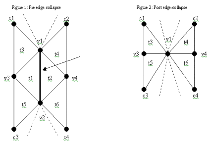
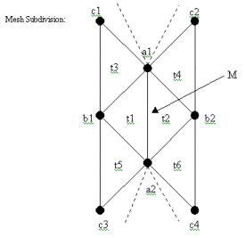

Optimized Rendering And Representation Of Manifold Triangle Meshes
Tim Keenan, Michael Ulveling
Click Here To View Simplification/Refinement Screenshots
Abstract
We have implemented a triangle mesh engine, which subdivides and simplifies triangle meshes and renders them efficiently utilizing t-strips. The engine reads in t-mesh data as a series of vertex triplets, each representing a single triangle in the mesh. It also reads in information on how to initialize the viewing parameters. The engine supports various viewing options such as shading (smooth/flat/wire-frame), coloring(t-strip/uniform/subdivision-illustration), rendering execution(single triangles/t-strips), 2 axis rotation, and zooming. All of the above mentioned features are interactive.
Objectives
To learn about optimizing mesh representation and rendering, and discover possible uses for these techniques, while recognizing their limitations.
Algorithms
To efficiently manipulate and analyze our t-mesh, we first need a method for traversing through the triangles. For this purpose, Jarek Rossignac has suggested the use of several corner operators. A corner is a unique integer representation of a single triangle vertex. A corner is distinct from a vertex in that the same vertex shared by several triangles will have a different corner ID for every triangle. Each triangle has three unique corners defining it, and the vertices referenced by each corner can be stored in a linear array of size 3*N, where N is the number of triangles in the mesh. We refer to this array as V (also called the corner table) in our code. Thus, V[0], V[1], and V[2] represent the three vertices in the first triangle (0, 1, and 2 are the first triangle’s corners), V[3], V[4], and V[5] the vertices of the second triangle (3, 4, and 5 the corners), and so on. We also define a parallel opposites table called O that stores pairs of corners which are geometrically opposite each other (their triangles share a common edge that neither corner is a vertex of). Note that while any index in V stores a vertex, indexes in O store corners. Thus, O[i] returns the corner opposite to i. In implementation, vertices, like corners, are also stored as integers. To retrieve the 3D coordinate data from an integer vertex, we use the vertex as an index into a data array that stores an abstract Point3D(a floating point triplet for the x, y, and z components) type at each index. The corner operators suggested by Rossignac are defined as follows. All operators take integer operands and return integer values, where c is the integer operand in all examples:
//the next corner in the triangle traveling counterclockwise around the normal:
c.n = c-2 if(c%3==2), else c+1
//the previous corner in the triangle traveling counterclockwise around the normal:
c.p = c.n.n
//the triangle that this corner belongs to:
c.t = c DIV 3
//the vertex ID that this corner references:
c.v = V[c]
//the corner opposite to this one:
c.o = O[c]
//the coner to the right of this one:
c.r = c.n.o
//the corner to the left of this one:
c.l = c.p.o
Before mesh rendering and simplification/subdivision, we must complete several initialization computations. First, we must ensure consistent orientation of all triangles – triangle corners must be listed counter-clockwise relative to the outward normal. Furthermore, we must ensure that the triangles normals actually point outward from the mesh surface. Once this is done, the O-table can be computed, and then the averaged (smooth) vertex normals. Finally, T-Strips can be built up at this point using a Depth-First Traversal. The following sections describe these algorithms and the simplification/refinement computations in detail.
Using Ray Intersection Parity To Determine The Outward Normal And Ensure Counter-Clockwise Orientation For A Single Triangle:
The purpose of this method is to ensure that a single triangle t has its corners oriented in a counter-clockwise fashion with respect to its outward normal.
To do this, we first *assume* that the triangle’s corners are oriented in a counter-clockwise fashion, and than calculate the "outward" normal as follows: pick any corner from t, C, and calculate N=C.n, P=C.p, CN=N-C, and CP=P-C. Then, the normal:
testNormal=(CN CROSS CP). If testNormal really is the triangle’s outward normal (and thus t has counter-clockwise orientation), then it will pass the following test:
If the total number of intersections was odd, then testNormal is not the outward normal, it is the inward normal. This means t’s corners are clockwise-oriented. Fix this by swapping the position of any two corners in the corner table (V) for t. Now, triangle t will be correctly oriented with respect to the outward normal.
Note that the steps listed above may run into problems when the ray R intersects the edge of a triangle. Since we are using the signed areas method, an edge intersection may be detected when any one of the three areas evaluates as zero. This can be patched by:
Of course, this parity method only works for closed polygonal hulls. Otherwise, the definition of which direction points inside/outside becomes ambiguous.
O-Table Computation/Traversal:
Computation of the O-table was an interesting problem. To calculate the correct O-table, we had to ensure that all triangles had a counter-clockwise orientation. However, the breadth-first traversal to ensure consistent orientation makes heavy use of the O-table. The solution to this problem lies in the fact that for our traversal, *any* reasonable O-table will do. This means that it doesn’t matter if the O-table was calculated with inconsistently orientated triangles; it will still get the job done for a breadth-first traversal.
Our overall algorithm looks like this:
Calculation of an O table:
We begin by creating a key, K={Min(C.n.v), Max(C.p.v)} for every corner, C, in the triangle mesh (Each key represents a unique edge, and each edge has two "Opposite" corners/vertices, one on each side). We construct 2 parallel hashtables H1, H2. Next, we try to add the value of corner C in H1 under the key K. If H1 already contains a value at this key, we throw the value C in H2 (under key K) instead. After we do this for every corner, the two hashtables contain all opposite vertices in parallel. To construct the O table, run through every key, tempKey, in H1/H2. H1(tempKey) and H2(tempKey) are mutually opposite corners. This method is fast, as it avoids sorting altogether. It also works since no edge has greater than 2 mutually opposite corners.
Traversal to Ensure Consistent Orientation Of Triangles:
Our main traversal is simply a modified Breadth-First-Search (BFS) from Introduction To Algorithms. We maintain an array of colors for each triangle in the mesh. These are 3-state colors: White, Gray, or Black. A white triangle is one which has not been "discovered" by the traversal yet. A Gray triangle has been discovered, but has not had all 3 of its adjacent triangles (adjacent triangles share one edge) discovered yet. A black triangle has had it and all of its adjacent triangles discovered, and signals a "dead-end" or stopping point for the traversal. As we traverse, we determine if a triangle T should be re-oriented, or "flipped", by comparing it to its "parent" triangle (The adjacent triangle which spawned T’s traversal. The parent = C.t). If C.n.v equals O.n.v, where O is the traversed corner of T, and O = C.o, then T has opposite orientation to its parent triangle. If T’s parent triangle (C.t) was flipped and T has same orientation, flip T. If T’s parent was not flipped and T has different orientation, also flip. Finally, it should be noted that our actual flipping should NOT be performed on the original V (corners) table. Such flipping would adversely affect the remainder of the traversal. Instead, we create a temporary copy of V called tempV, and then do the traversal. All swapping is performed on tempV, and V is used for everything else (corner table reads). The following pseudo-code uses the tempO and tempV tables described above to do a breadth-first traversal:
Orient(corner C) {
/*C is the corner of the "parent" triangle that led to the current triangle to orient (C.o.t)*/
O = opposite corner of C (C.o)
If( (C.t is NOT marked as flipped)AND(C.n.v equals O.n.v) ) {
//only change tempV, not V
Swap any two corners of O.t in tempV
Mark O.t as flipped
}
else if((C.t is marked as flipped)AND(C.n.v NOT Equals O.n.v) ) {
Swap any two corners of O.t in tempV (tempV[O.t])
Mark O.t as flipped
}
}
//end OrientTraverse(triangle T) {
If(t is Black) quit
C = the first corner of T
Corner1 = C;
Corner2 = C.n;
Corner3 = C.p;
adjacentTriangle1 = (Corner1).o.t
adjacentTriangle2 = (Corner2).o.t
adjacentTriangle3 = (Corner3).o.t
for( all 3 adjacent triangles, N=triangle number ) {
if( this adjacent triangle is White ) {
Orient(CornerN)
Color this adjacent triangle Gray
Traverse(adjacentTriangleN)
}
}
Color T Black
} //end Traverse
Of course, calling Traverse once will only discover all triangles if the entire mesh is connected. To discover all triangles in an unconnected mesh, and orient them correctly, we do the following:
TraverseAll() {
Calculate temporary opposites table
Color all triangles White
Mark all triangles as unflipped
TempV = V
For( every triangle, T, in the mesh ) {
If( T is White ) {
Use parity test to correctly orient T
Color T Gray
Traverse(T)
}
}
V = tempV
re-calculate opposites table with all triangles correctly oriented
}
After running this code, we will have all triangles correctly oriented, and the correctly calculated opposites table. To speed up the traversal, we could use a non-recursive BFS utilizing a queue of all currently considered triangles.
Calculating Average(Smoothed) Normals:
Give a corner, c, we wish to determine an averaged normal based on all triangles incident to that corner. We chose to sum the normals of all triangles incident to c, and use this as our "averaged" normal (the result may need to be re-normalized if normalized normals are required). To do this, we must somehow traverse about all triangles incident to c. The problem is complicated by the fact that any corner can be shared by N triangles, where N can be any integer >=3 (N cannot be less than 3, as that would require a triangle with a single angle >=180 degrees). After a little trial and error, it was determined that the following sequence of operators would radially traverse about c:
T1 = c.t, T2 = c.n.o.t, T3 = c.n.o.p.o.t, T4 = c.n.o.p.o.p.o.t, and so on. In general:
T(1) = c.t, T(2) = c.n.o.t, T(N+2) = c.n.o(.p.o)^N.t
The traversal should be terminated when the first duplicate triangle (a triangle we have already traversed) is encountered. This method allows us to traverse exactly the number of triangles N incident to c, where N can be any integer >=3.
Note that we could also traverse in the opposite direction:
T1=c.t, T(2)=c.p.o.t, T(N+2)=c.n.o(.n.o)^N.t
It should also be noted that the above traversal assumes a counter-clockwise orientation of corners for every triangle. The definition of counter-clockwise orientation is as follows:
Given any corner, C, of any triangle, T, let N = C.n and P=C.p. Let CN=N-C, and CP=P-C. Then:
(CN CROSS CP) DOT (T’s outward normal) > 0 if T has a counter-clockwise orientation of corners.
Now that we have an algorithm to radial traverse the triangles incident to a corner c, we can compute the averaged vector as follows:
triangle1 = c.t
triangle2 = c.n.o.t
sumNormal = (triangle1’s normal)+(triangle2’s normal)
currentCorner = c.n.o
currentTriangle = triangle2
While(currentTriangle is not a triangle we have already visited) Do {
currentCorner = currentCorner.p.o
currentTriangle = currentCorner.t
sumNormal = sumNormal+(currentTriangle’s normal)
}
Constructing Generalized T-Strips:
We use a depth-first search (DFS, described in Introduction To Algorithms) to construct the T-strips. We maintain an array of labels, one for each triangle in the mesh. We then start with the first triangle, pick any one of its corners C, and traverse on C. First we label C.t. Then, we add C.t to the current T-strip. If C.r.t is not labeled, we traverse on C.r. Otherwise, if C.l.t is not labeled, we traverse on C.l. If both are labeled, we have reached a dead-end and quit (this signals the end of a branch, or T-strip). At the end of such a traversal, we have constructed a single T-strip originating at corner C (containing a list of all triangles in the T-strip). To construct all the T-strips in the mesh, we do the following
:Initialize all triangles to be unlabeled
Create a new, empty list of T-Strip objects, allStrips
For( every triangle T in the mesh ) {
If( T is not labeled ) {
Create a new, empty T-strip object, currentStrip
//Creates another T-Strip in currentStrip:
DFSTraverse(first corner of T, currentStrip)
Add currentStrip to allStrips collection
}
}
//allStrips now contains a list of all generalized T-Strips in the triangle mesh
Converting Generalized T-Strips To OpenGL Format:
Step1: Insert zero-area triangles in our T-Strips:
In our depth-first traversal, a traversal is either:
For each T-strip, traverse every triangle in order. If we have two Right or two Left states in a row, we must split them up with a zero-area triangle (called a Right_Wedge or a Left_Wedge, respectively). A right wedge is needed when we have two consecutive right triangles, R1 and R2, which were traversed on corners RC1 and RC2, (in that order) respectively. The right wedge is formed by storing RC1.p, and the left wedge is formed by storing LC2.p and LC2.n (in that order). The wedges are than inserted just like regular triangles into the current T-Strip object (marking them as a wedge-state).
Step 1 need only be done once, at the beginning after all T-Strips are constructed.
Step 2: Algorithm to pump out vertices from our T-Strips in the correct order for OpenGL:
Create a new ordered collection of vertices, stripVertices. For a single T-Strip, go through every triangle in order. If the triangle is a Left_Wedge, add LC2.p.v and then LC2.n.v (described above). If the triangle is a Right_Wedge, add RC2.p.v. If the triangle is in a Right state, add the vertex C.n.v to stripVertices. If in a Left state, add C.p.v to stripVertices. Special case consideration is taken for the first and last triangles in each strip, as well as the case of a one-triangle strip. Once this algorithm has completed, stripVertices contains a list of vertices that can be fed directly into OpenGL for rendering a triangle strip. Repeat for each T-strip.
Mesh Simplification Algorithm:
The goal of mesh simplification is to reduce the number of vertices and triangles in the representation of a t-mesh, while retaining as much surface detail as possible. Our simplification algorithm utilizes a simple edge-collapse function, which may be repeated any number of times. Each edge collapse proceeds as follows:Thus, it follows that each edge collapse eliminates one vertex and two triangles from the t-mesh. Since our goal for each simplification pass is to reduce the number of unique vertices by 75%, we simply do 0.75*N edge collapses, where N is the number of vertices in the non-simplified mesh.
Given an edge (v1, v2) in a manifold mesh, we know that there exist two triangles, t1 and t2, that are incident to (v1, v2). We also know that there exist triangles t3, t5 adjacent to t1, and triangles t4, t6 adjacent to t2. See figure 1 below for an illustration of this pre-edge collapse configuration:

Detailed Mesh Simplification Algorithm
:The following steps will achieve one simplification pass on mesh M:
1) Calculate an edge table, E, for the non-simplified t-mesh. An edge table is just a collection of edges. Each edge in the collection should store its two vertices (integers), the two triangles incident to it (integers), and its weight (a float):
struct Edge {
int v1, v2;
int t1, t2;
float weight;
}
We calculate the each edge weight as follows:
n1 = normalize(v1.normal)
//The normalized vertex normal of vertex v1n2 = normalize(v2.normal)
//The normalized vertex normal of vertex v2
//edge length divided by the dot product of the vertex normals,
//re-centered to the range [0, 1]:
weight = | v1-v2 | / [((n1 DOT n2)+1)/2.0]
Notice that the weight formula above is slightly different than the standard |v1-v2|/(n1 DOT n2) formula described in the Watt book. We felt that an edge with vertex normals pointing in different directions should always be weighted higher that an edge with normals pointing in the same direction; thus the modified formula.
2) Calculate the total number of edge collapses to perform as 0.75*(number of vertices in mesh M)
3) Pick the edge, minE, carrying the minimum weight in edge table E. Delete minEdge from E.
4) Traverse mesh M to find all edges incident to minE.v1 and minE.v2. Delete these edges from table E.
5) Calculate the midpoint, m, of edge minE.
6) In mesh M, replace the data point represented by minEdge.v1 with the data point m. (meshData[v1]=m;). Also replace v1’s old vertex normal with the average of minEdge’s two vertex normals.
7) Traverse the mesh to find all triangle corners that refer to the vertex minEdge.v2. Change these so that they all refer to minEdge.v1, instead.
8) Patch-up the mesh’s O-table by setting: c1.o=c3, c3.o=c1, c2.o=c4, and c4.o=c2
9) Delete vertex minEdge.v2, as well as triangles minE.t1 and minE.t2 from mesh M.
10) Traverse the mesh to find all triangles incident to (the now altered) mesh M. Recalculate plane and vertex normals for each of these triangles (This step is optional).
11) Traverse (the now altered) mesh M to find all edges incident to minEdge.v1. Calculate new weights for all of these edges, and then add them all to edge table E. (Steps 3-11 describe a single edge collapse).
12) If steps 3-11 have been executed 0.75*(# of vertices in the original mesh) times, we are done with this simplification pass. Otherwise, return to step 3).
Note that our algorithm makes use of a few different high-level mesh traversal functions: finding all triangle incident to a vertex, finding all edges incident to a vertex, and finding all triangle corners that share a given vertex. Fortunately, if we know at least one triangle that shares the given vertex, the above queries can be computed rather quickly (O(1) time). This can be accomplished by utilizing the same radial traversal that was used to compute averaged vertex normals in the last project. The pseudocode for these traversals is listed below:
/*Find the corner of triangle t that contains vertex v. Triangle t must contain vertex v for this function to work properly:*/
Function findCorner(int v, int t) returns a Corner {
Corner c = t*3;
//Check to see if the previous corner references vertex v:
if( c.p.v==v ) { c = c.p; }
//Check to see if the next corner references vertex v:
else if( c.n.v== v) { c = c.n; }
return c;
}
//findCorner()/*Find all triangles that are incident to (contain) vertex v. Also pass in triangle t, which can be any one triangle incident to vertex v. In the context of an edge collapse, we always know at least one triangle that is incident to the vertex of interest, so this restriction does not pose a problem. Passing in triangle t allows the use of an efficient traversal algorithm:*/
Function getIncidentTriangles(int v, int t) {
Collection allTriangles;
Corner c = findCorner(v, t);
//Find the corner in triangle t that references vertex v//Traverse c radially:
int firstTriangle = c.t;
add firstTriangle to allTriangles
Corner currentCorner = c.n.o;
add currentCorner.t to allTriangles
//Radially traverse the current corner we are interested in, adding each
//new triangle to allTriangles. Quit when we run into the first triangle
//again. This only works for manifold meshes:
int currentTriangle = firstTriangle;
while( true ) {
currentCorner = currentCorner.p().o();
currentTriangle = currentCorner.t();
if( currentTriangle==firstTriangle ) {
break;
}
add currentTriangle to allTriangles
}
//while()return allTriangles;
}
//getIncidentTriangles()/*Find all corners that are incident to (contain) vertex v. Also pass in triangle t, which must be incident to vertex v. Passing in triangle t allows the use of an efficient traversal algorithm:*/
Function getIncidentCorners(int v, int t) {
Collection allCorners;
//Get all the triangles incident to vertex v:
Collection incidentTriangles = getIncidentTriangles(v, t);
//Search each of these incident triangles for the corner that contains vertex v:
for(every triangle, i, in incidentTriangles: ) {
Corner c = findCorner(v, incidentTriangles[i]);
add c to incidentCorners
}
//for(i)return allCorners;
}
//getIncidentCorners()/*Find all edges that are incident to (contain) vertex v. Also pass in triangle t, which must be incident to vertex v. Passing in triangle t allows the use of an efficient traversal algorithm. The boolean parameter recalculate weights allows the user to specify whether we should bother to recalculate the edges’ weights as they are discovered. Generally, this parameter is set to true when we intent to insert the found edges into the edge table data structure, and false otherwise.*/
Function getIncidentEdges(int v, int t, boolean recalculateWeights) {
Collection allEdges;
//Get all incident corners to this vertex:
Collection corners = this.getIncidentCorners(v, t);
//For every incident corner:
for( every corner, i, in corners: ) {
//Each edge is composed of an incident corner and that corner’s previous corner:
Corner c = corners[i];
Corner p = c.p;
Create new edge: currentEdge
currentEdge.v1 = c.v; currentEdge.v2 = p.v;
//Calculate the edge’s two adjacent triangles:
currentEdge.t1 = c.t; currentEdge.t2 = c.n.o.t;
//Calculate the edge’s weight, if necessary:
if( recalculateWeights==true )
calculate currentEdge’s weight
}
add currentEdge to allEdges
}
//for(i)return allEdges;
}
//getIncidentEdges()
Additional Tests Necessary to Help Keep The Mesh Manifold (Error Detection):
When the simplification algorithm above was applied to our test meshes, strange errors began popping up after the second pass. Apparently, manifold meshes are not closed in the simplification operation (simplification of a manifold mesh may not be manifold). To help keep our mesh manifold, we implemented a few special tests. Once a minimum weight edge is chosen, it is subjected to these tests. If the edge fails any of these tests, it is re-weighted to infinity and re-inserted back into the edge table E.Test 1): if c1==c3 OR c2==c4, edge (v1, v2) fails this test (refer to the edge collapse diagram above). Conceptually, if c1==c3, then either t3, t4 become zero-area triangles, or t3, t4 fold on top of each other. Furthermore, it is ambiguous what c1.o or c3.o should be set to after this edge collapse. A similar situation occurs if c2=c4.
Test 2), suggested by Rossignac: for each triangle incident to vertices v1, v2 (with the exception of t1,t2), if the triangle’s normal after an edge collapse has rotated by >=90 degrees from its pre-collapse position (if a normal has "flipped"), then edge (v1, v2) fails this test.
Test 3) Analyzes the state of the mesh’s O-table after a collapse. For every unique edge in every triangle incident to v1 (after the collapse), the O-table entries for triangles incident to that edge are inspected. It conducts a few simple tests, such as making sure an edge’s two incident triangles have corners that are mutual opposites. If any of these tests uncovers an inconsistency in O, the edge collapse is reversed, and it fails this test.
The 3 tests described above make a huge difference in performance. Without the tests, some of our models could not be simplified twice without crashing. Also, a subdivide could almost never be used following a simplify. After implementing these tests, we have not yet encountered a combination of simplify()’s and refine()’s that has caused unstable/unexpected results.
Mesh Subdivision:
Compared to mesh simplification, mesh subdivision (implemented as butterfly subdivision) was quite straightforward:No major problems were encountered with the implementation of mesh subdivision. The overall algorithm complexity is O(N).

Results
Rendering Performance Statistics:
Average Rendering Times-
Average T-Strip Size-
Rendering with T-Strips improved performance noticeably over rendering triangles separately. T-strips used in conjunction with smooth (Gouraud) shading ran almost 20% faster than flat shaded single triangles. Surprisingly, flat shading without T-strips was no faster than smooth shading without T-strips. This may be due to a high level of hardware optimization for Gouraud shading.
Performance of Mesh Simplification/Subdivision
Efficient Deletion Of Triangles and Vertices From the Mesh:
The mesh simplification algorithm listed above deletes two triangles and one vertex per edge collapse. Since the vertex/triangle data is stored by the corner tables (V an O) in the from of arrays, each such deletion would require O(N) time. Since there are O(N) edge collapses being performed, this results in an O(N^2) simplification (at best). For large values of N, O(N^2) computational time is unacceptable. Thus, we decided not to physically delete the two triangles and vertex upon each edge collapse. Instead, we only mark the targeted vertex/triangle for deletion. This can be accomplished with two parallel bit arrays, one for marking vertices, and the other for marking triangles. Once all edge collapses are completed, we can use the bit arrays and the old corner tables to completely reconstruct the mesh M (the new mesh will be one-fourth the size of the old mesh). This mesh reconstruction can be completed in O(N) time. Marking vertices/triangles for deletion within the edge collapse loop requires only O(1) time. Thus, the total time for deleting vertices/triangles using this marking method is O(N)*O(1)+O(N) = O(N), a substantial improvement over O(N^2).Note that this optimization works because we patch-up the O-table, and redirect all v2 references to v1 after each edge collapse (steps 8and 7 above, respectively). By doing so, we never have to worry about v2, t1, or t2 being referenced/traversed, so they need not be physically deleted from the mesh until later.
Algorithmic Complexity Of Simplification Algorithm:
First, we will analyze the computational time required to complete a single edge collapse. It is vital that we compute each edge collapse efficiently, since there are O(N) edge collapses. When dealing with meshes containing more than a few thousand triangles, O(N)*O(N) complexity is unacceptably slow. Thus, to avoid O(N^2) time, we must do better than O(N) for each edge collapse:
Step 3) in our simplification algorithm (the first step of an edge collapse) requires that we find the minimum weighted edge within our edge table, E. The time taken by this process varies greatly depending on the underlying data representation of E. If E is stored as a linked list, array, or hashtable of edges, it will take O(N) operations to find the minimum weighted edge. If E is stored as a sorted array, this can be done in O(1) time. Unfortunately, a sorted array will not do, since inserts/deletes into such an array take O(N) time, at best (steps 3, 4, and 11 all require edges inserts or deletes on E). The best solution we could devise was to store E as a Binary Search Tree (BST) sorted on edge weights. For a BST(we use a Red-Black BST for our implementation), finding the minimum weighted edge, inserting an edge, and deleting an edge all take O(log(N)) time, which is acceptable.
Step 4) requires that we traverse the mesh to find all incident edges to vertices v1, v2, and then delete all these edges from E. Finding all incident triangles (via our getIncidentEdges function described above) is O(1) complexity. This is because on average, each vertex is shared by a constant number of triangles (around 6 for most meshes), and each such triangle contributes one unique incident edge. Deleting these edges poses a small problem. To delete from the BST, we need to know an edge’s weight. However, this information cannot be obtained by the getIncidentEdges traversal without explicit recalculation of the edge weights. Only the edge’s two incident triangles and vertices can be directly obtained by such a traversal. Even if we do explicitly recalculate the edge weight, the edge may have been re-assigned a new weight in a previous edge collapse (see error-prevention below), which would not be reflected in the re-calculation. The solution is to store E as dual data structures: a Hashtable hashed on an edge’s two vertices, and a BST sorted an edge’s weight. Now, all that needs to be known to delete an edge from E is the edge’s two vertices. The weight can be obtained from the hashtable (insert/delete/searches for a hashtable are O(1) time), and this is then used to delete the edge from the BST. In implementation, we chose to abstract away these details. The edge table E encapsulates both the hashtable/BST, and provides high-level insert/delete/min operations. Overall this step requires O(1)+2*O(1)+O(log(N) = O(log(N)) time.
Step 5) involves calculation of a single midpoint, and is thus O(1).
Step 6) involves two array random access/sets, and is also O(1)
Step 7) calls our getIncidentCorners() traversal, which is O(1) as shown above. Changing O(1) values in an array is also O(1), so overall step 7 is O(1).
Step 8) requires 4 simple array accesses/sets, and is O(1).
Step 9) involves setting 3 marks in out triangle/vertex bit arrays (see "Efficient Deletion Of Triangles and Vertices" above), and is O(1)
Step 10) involves our getIncidentTriangles() traversal, a cost of O(1). Recalculating normals for each of these incident triangles is also O(1). Overall for this step is O(1).
Step 11) (the last step in an edge collapse) involves our getIncidentEdges() traversal, an O(1) cost. Inserting O(1) edges into a BST is O(1)*O(log(N)) = O(log(N)) time. Inserting O(1) edges into a hashtable is O(1)*O(1) = O(1) time. Overall for this step is O(log(N)) time.
Summing the computational costs for a single edge collapse gives O(log(N)) time. Since we have N collapses, the total cost for steps 3-11 is O(N*log(N)). The edge table can be computed in log(N) time. Steps 2 and 12 are trivially O(1). The mesh reconstruction after all edge collapses is O(N). Thus, the total cost of edge simplification with our algorithm is O(N*log(N)).
Algorithmic Complexity Of Subdivision Algorithm:
The subdivision algorithm requires a constant number of operations per triangle and thus has O(N) complexity.
The simplification/subdivision algorithms perform reasonably for meshes ranging up to tens of thousands of triangles (our system was a Pentium III PC).
Uses Of Simplification/Refinement And Summary of Results:
Simplification
:The results of our simplification algorithm were quite pleasing, overall. Removing 75% of the data from a model is quite drastic, yet the simplified models still retain most of their major shape-defining features (small, subtle surface details are the first to go). After two or more consecutive simplifications, the model’s overall shape begins to deteriorate, but the models still looks quite reasonable given the small number of vertices they have to work with.
Simplification seems to be quite useful for speeding up rendering. If highly detailed models are required, a 20-35% reduction in the number of vertices (instead of the drastic 75%) hardly affects the appearance of the mesh in any noticeable way (especially if smooth shading is being used). This 20-35% reduction in vertices directly translated into a 20-35% reduction in render time for our test cases. Furthermore, the further the models are rendered from the viewpoint, the more loss of detail from simplification becomes insignificant. High degrees of simplification can be applied to models that will only take up a small percentage of the screen space. This would yield substantial savings in render time.
It appears that mesh simplification may slightly decrease the performance of our t-strip building DFS algorithm (slightly fewer triangles per strip). However, This loss is greatly outweighed by the other advantages of mesh simplification.
From our tests, it looks like simplification works best on models that don’t have many thin, elongated features or important subtle surface details. The shark, which has many pointy features, and the triceratops’s long horns don’t fare as well as the bunny. On a pleasant note, none of the models broke up at any point. This may be due in part to the special edge collapse tests described above.
Refinement
:While simplification tends to smooth small details, refinement seems to embolden them, regardless of whether flat shading or Gouraud shading is used (see pictures attached to paper). Furthermore, if flat shading is the only type of shading available, repeated refinement can be used to eliminate the faceted look of a flat shaded mesh. Not only can repeated refinement be used as a replacement for Gouraud/Phong shading, but it also eliminates silhouette sharp edges, a problem that has always plagued the interpolated shading methods. The drawback is the much slower rendering time.
Refinement seems to increase t-strip performance by up to 1/6 per refinement. This may be due to the regular polygonal patters that emerge as a result of butterfly subdivision
.Simplification Followed By Refinement
:Simplification followed by refinement has an obvious use for transmission of models over networks: A mesh can be simplified into a much smaller representation, sent over the network in compressed form, and then refined to a higher level of detail once it reaches its destination. One additional benefit we saw from this type of mesh manipulation was increased t-strip performance (more triangles per strip, fewer swaps per strip). Visually, it can be seen from our screen shots that R(S(M)) and R(R(S(S(M)) both produce more "regular" looking meshes. This could account for the improved t-strip performance (see the stats below regarding t-strip performance after various manipulations).
Refinement Followed By Subdivision
:There’s very little difference in the resulting image quality when compared to simplification followed by refinement. Thus, it’s not quite clear to us what this is useful for. It doesn’t improve t-strip performance, speed up network transmission, or speed up rendering, and some surface detail is still lost. It’s also a lot more expensive than simplification followed by subdivision. One possibility is that it could be used as a sort of 3D-filter to smooth out small aberrations on a surface, without sacrificing major surface details.
T-Strip Statistics On Various Simplified/Refined Forms Of The Bunny Mesh:
|
Mesh: |
Traingles Per Strip: |
Swaps Per Strip: |
|
M |
12.773 |
4.953 |
|
R(M) |
15.832 |
4.482 |
|
S(R(M)) |
12.292 |
4.725 |
|
S(M) |
12.634 |
4.930 |
|
R(S(M)) |
14.278 |
4.228 |
|
S(S(M)) |
11.657 |
4.743 |
|
R(S(S(M))) |
16.485 |
4.657 |
|
R(R(S(S(M)))) |
16.485 |
3.677 |
Click Here To View Simplification/Refinement Screenshots
Bibliography
Cormen, Leiserson, Rivest. Introduction to Algorithms. New York; McGraw-Hill, 1990.
Woo, Mason, et al. OpenGL Programming Guide. 3rd ed. Reading, MA;
Addison Wesley, 1999.
Watt, Alan. 3D Computer Graphics. 3rd ed. New York; Addison Wesley, 1993.
Rossignac, Jarek. Professor Georgia Institute of Technology. Fall 2000.
Authors
Tim Keenan is an undergrad at Georgia Tech, majoring in Computer Science. He has held an interest in computer graphics since he began working in computer science. He is primarily interested in animation, modeling, and interactive graphics.
Michael Ulveling is also an undergrad majoring in Computer Science at Georgia Tech. His interests include photo realistic rendering, object oriented design, and scientific computing
.